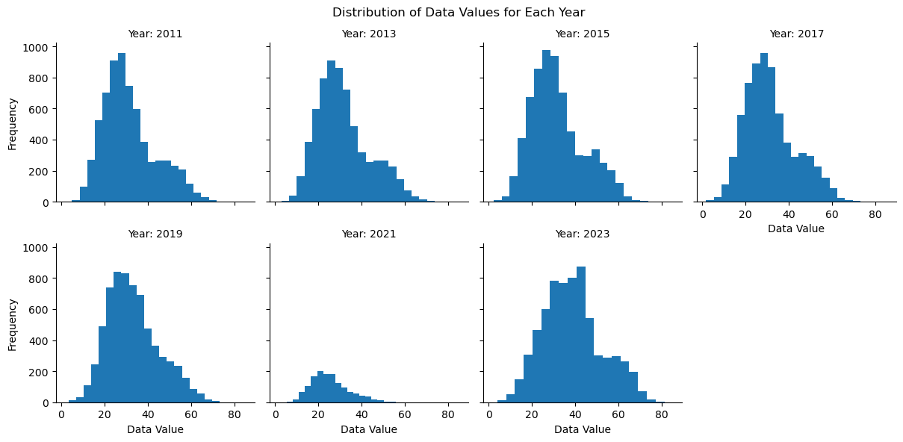
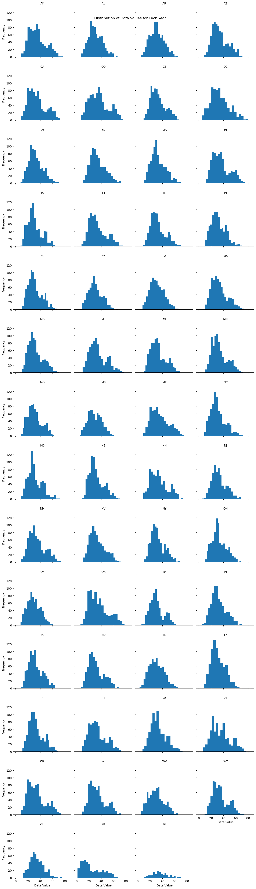
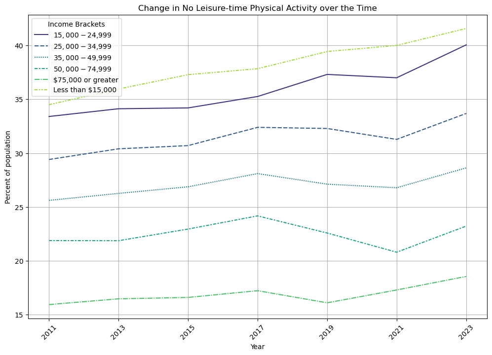
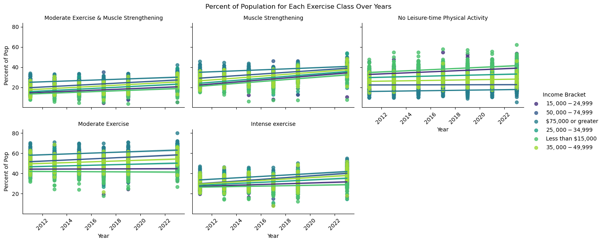
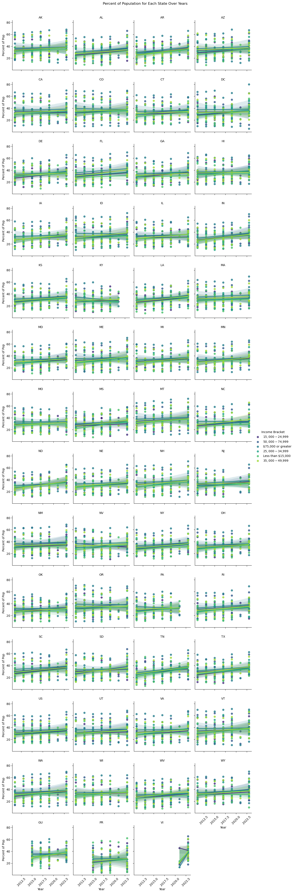
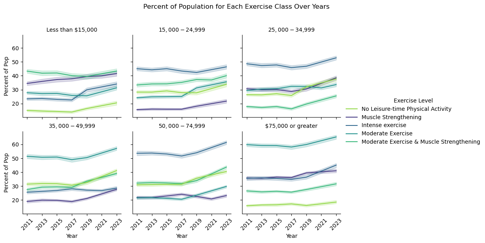
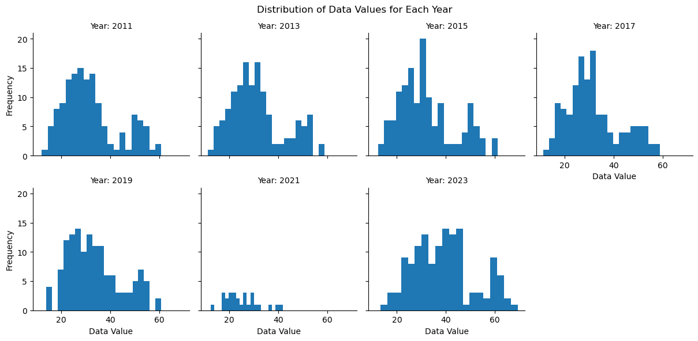
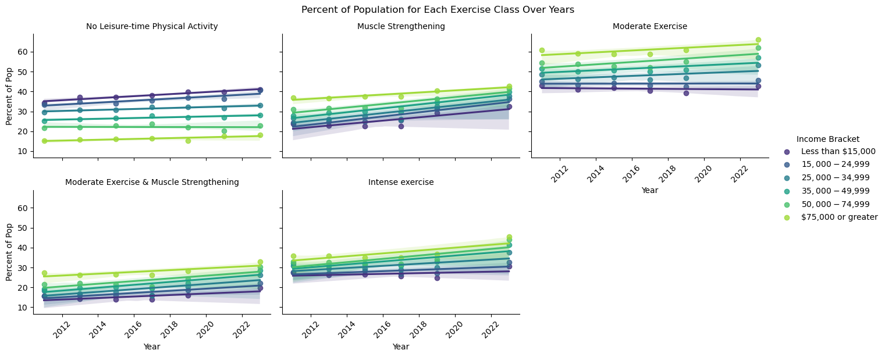
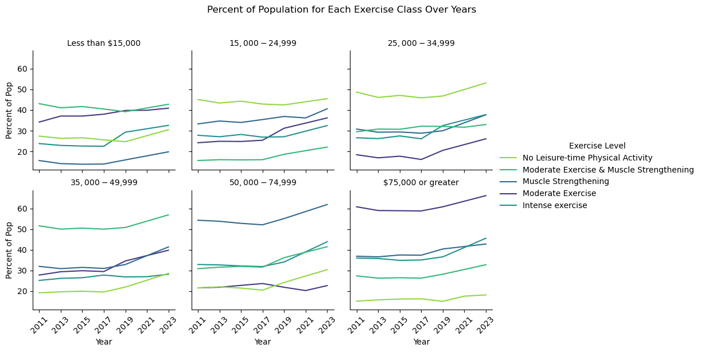

import pandas as pd
import numpy as np
import seaborn as sns
import matplotlib.pyplot as plt
import warnings
warnings.filterwarnings('ignore')Explore Dataset
brfss = pd.read_csv('../data/Nutrition.csv')#explore the data
brfss.info()<class 'pandas.core.frame.DataFrame'>
RangeIndex: 104272 entries, 0 to 104271
Data columns (total 33 columns):
# Column Non-Null Count Dtype
--- ------ -------------- -----
0 YearStart 104272 non-null int64
1 YearEnd 104272 non-null int64
2 LocationAbbr 104272 non-null object
3 LocationDesc 104272 non-null object
4 Datasource 104272 non-null object
5 Class 104272 non-null object
6 Topic 104272 non-null object
7 Question 104272 non-null object
8 Data_Value_Unit 88872 non-null float64
9 Data_Value_Type 104272 non-null object
10 Data_Value 93505 non-null float64
11 Data_Value_Alt 93505 non-null float64
12 Data_Value_Footnote_Symbol 10767 non-null object
13 Data_Value_Footnote 10767 non-null object
14 Low_Confidence_Limit 93505 non-null float64
15 High_Confidence_Limit 93505 non-null float64
16 Sample_Size 93505 non-null float64
17 Total 3724 non-null object
18 Age(years) 22344 non-null object
19 Education 14896 non-null object
20 Gender 7448 non-null object
21 Income 26068 non-null object
22 Race/Ethnicity 29792 non-null object
23 GeoLocation 102340 non-null object
24 ClassID 104272 non-null object
25 TopicID 104272 non-null object
26 QuestionID 104272 non-null object
27 DataValueTypeID 104272 non-null object
28 LocationID 104272 non-null int64
29 StratificationCategory1 104272 non-null object
30 Stratification1 104272 non-null object
31 StratificationCategoryId1 104272 non-null object
32 StratificationID1 104272 non-null object
dtypes: float64(6), int64(3), object(24)
memory usage: 26.3+ MBprint("Number of rows:", len(brfss))
print("Number of columns (variables in the survey):", len(brfss.columns))
print(brfss.columns)Number of rows: 104272
Number of columns (variables in the survey): 33
Index(['YearStart', 'YearEnd', 'LocationAbbr', 'LocationDesc', 'Datasource',
'Class', 'Topic', 'Question', 'Data_Value_Unit', 'Data_Value_Type',
'Data_Value', 'Data_Value_Alt', 'Data_Value_Footnote_Symbol',
'Data_Value_Footnote', 'Low_Confidence_Limit', 'High_Confidence_Limit ',
'Sample_Size', 'Total', 'Age(years)', 'Education', 'Gender', 'Income',
'Race/Ethnicity', 'GeoLocation', 'ClassID', 'TopicID', 'QuestionID',
'DataValueTypeID', 'LocationID', 'StratificationCategory1',
'Stratification1', 'StratificationCategoryId1', 'StratificationID1'],
dtype='object')brfss.isnull().sum()YearStart 0
YearEnd 0
LocationAbbr 0
LocationDesc 0
Datasource 0
Class 0
Topic 0
Question 0
Data_Value_Unit 15400
Data_Value_Type 0
Data_Value 10767
Data_Value_Alt 10767
Data_Value_Footnote_Symbol 93505
Data_Value_Footnote 93505
Low_Confidence_Limit 10767
High_Confidence_Limit 10767
Sample_Size 10767
Total 100548
Age(years) 81928
Education 89376
Gender 96824
Income 78204
Race/Ethnicity 74480
GeoLocation 1932
ClassID 0
TopicID 0
QuestionID 0
DataValueTypeID 0
LocationID 0
StratificationCategory1 0
Stratification1 0
StratificationCategoryId1 0
StratificationID1 0
dtype: int64brfss.head(5)| YearStart | YearEnd | LocationAbbr | LocationDesc | Datasource | Class | Topic | Question | Data_Value_Unit | Data_Value_Type | ... | GeoLocation | ClassID | TopicID | QuestionID | DataValueTypeID | LocationID | StratificationCategory1 | Stratification1 | StratificationCategoryId1 | StratificationID1 | |
|---|---|---|---|---|---|---|---|---|---|---|---|---|---|---|---|---|---|---|---|---|---|
| 0 | 2011 | 2011 | AK | Alaska | BRFSS | Obesity / Weight Status | Obesity / Weight Status | Percent of adults aged 18 years and older who ... | 2011.0 | Value | ... | (64.845079957001, -147.722059036) | OWS | OWS1 | Q036 | VALUE | 2 | Race/Ethnicity | 2 or more races | RACE | RACE2PLUS |
| 1 | 2011 | 2011 | AK | Alaska | BRFSS | Obesity / Weight Status | Obesity / Weight Status | Percent of adults aged 18 years and older who ... | 2011.0 | Value | ... | (64.845079957001, -147.722059036) | OWS | OWS1 | Q036 | VALUE | 2 | Race/Ethnicity | Other | RACE | RACEOTH |
| 2 | 2011 | 2011 | AK | Alaska | BRFSS | Physical Activity | Physical Activity - Behavior | Percent of adults who achieve at least 150 min... | 2011.0 | Value | ... | (64.845079957001, -147.722059036) | PA | PA1 | Q044 | VALUE | 2 | Gender | Female | GEN | FEMALE |
| 3 | 2011 | 2011 | AK | Alaska | BRFSS | Obesity / Weight Status | Obesity / Weight Status | Percent of adults aged 18 years and older who ... | 2011.0 | Value | ... | (64.845079957001, -147.722059036) | OWS | OWS1 | Q036 | VALUE | 2 | Age (years) | 35 - 44 | AGEYR | AGEYR3544 |
| 4 | 2011 | 2011 | AK | Alaska | BRFSS | Obesity / Weight Status | Obesity / Weight Status | Percent of adults aged 18 years and older who ... | 2011.0 | Value | ... | (64.845079957001, -147.722059036) | OWS | OWS1 | Q037 | VALUE | 2 | Income | $15,000 - $24,999 | INC | INC1525 |
5 rows × 33 columns
# create new short df
brfss_short = brfss[['YearStart', 'LocationAbbr','Class', 'Topic', 'Question', 'Data_Value',
'Data_Value_Alt', 'Data_Value_Footnote_Symbol','Data_Value_Footnote','Sample_Size', 'Total',
'Age(years)', 'Education', 'Gender', 'Income','Race/Ethnicity']]for col in brfss_short.columns:
if col != "Data_Value" and col != "Data_Value_Alt":
print("The Unique Values for {0} are: {1}".format(col,brfss_short[col].unique()))The Unique Values for YearStart are: [2011 2012 2013 2014 2015 2016 2017 2018 2019 2020 2021 2022 2023]
The Unique Values for LocationAbbr are: ['AK' 'AL' 'AR' 'AZ' 'CA' 'CO' 'CT' 'DC' 'DE' 'FL' 'GA' 'HI' 'IA' 'ID'
'IL' 'IN' 'KS' 'KY' 'LA' 'MA' 'MD' 'ME' 'MI' 'MN' 'MO' 'MS' 'MT' 'NC'
'ND' 'NE' 'NH' 'NJ' 'NM' 'NV' 'NY' 'OH' 'OK' 'OR' 'PA' 'RI' 'SC' 'SD'
'TN' 'TX' 'US' 'UT' 'VA' 'VT' 'WA' 'WI' 'WV' 'WY' 'PR' 'GU' 'VI']
The Unique Values for Class are: ['Obesity / Weight Status' 'Physical Activity' 'Fruits and Vegetables']
The Unique Values for Topic are: ['Obesity / Weight Status' 'Physical Activity - Behavior'
'Fruits and Vegetables - Behavior']
The Unique Values for Question are: ['Percent of adults aged 18 years and older who have obesity'
'Percent of adults who achieve at least 150 minutes a week of moderate-intensity aerobic physical activity or 75 minutes a week of vigorous-intensity aerobic physical activity and engage in muscle-strengthening activities on 2 or more days a week'
'Percent of adults aged 18 years and older who have an overweight classification'
'Percent of adults who engage in muscle-strengthening activities on 2 or more days a week'
'Percent of adults who achieve at least 300 minutes a week of moderate-intensity aerobic physical activity or 150 minutes a week of vigorous-intensity aerobic activity (or an equivalent combination)'
'Percent of adults who engage in no leisure-time physical activity'
'Percent of adults who achieve at least 150 minutes a week of moderate-intensity aerobic physical activity or 75 minutes a week of vigorous-intensity aerobic activity (or an equivalent combination)'
'Percent of adults who report consuming fruit less than one time daily'
'Percent of adults who report consuming vegetables less than one time daily']
The Unique Values for Data_Value_Footnote_Symbol are: [nan '~']
The Unique Values for Data_Value_Footnote are: [nan 'Data not available because sample size is insufficient.']
The Unique Values for Sample_Size are: [ 128. 63. 1702. ... 4124. 4472. 3763.]
The Unique Values for Total are: [nan 'Total']
The Unique Values for Age(years) are: [nan '35 - 44' '25 - 34' '18 - 24' '55 - 64' '65 or older' '45 - 54']
The Unique Values for Education are: [nan 'Less than high school' 'Some college or technical school'
'High school graduate' 'College graduate']
The Unique Values for Gender are: [nan 'Female' 'Male']
The Unique Values for Income are: [nan '$15,000 - $24,999' '$50,000 - $74,999' '$75,000 or greater'
'Less than $15,000' '$25,000 - $34,999' 'Data not reported'
'$35,000 - $49,999']
The Unique Values for Race/Ethnicity are: ['2 or more races' 'Other' nan 'Non-Hispanic White' 'Asian'
'Hawaiian/Pacific Islander' 'American Indian/Alaska Native' 'Hispanic'
'Non-Hispanic Black']insufficient_rows = brfss_short[brfss_short['Data_Value_Footnote'] == 'Data not available because sample size is insufficient.']
print("There are {0} rows from brfss_short total {1} which are missing data because sample size is insufficient".format(len(insufficient_rows),len(brfss_short)))
print(insufficient_rows.info())
print(insufficient_rows['Question'].unique())
print(insufficient_rows['Data_Value_Footnote_Symbol'].unique())
print(insufficient_rows['Race/Ethnicity'].unique())There are 10767 rows from brfss_short total 104272 which are missing data because sample size is insufficient
<class 'pandas.core.frame.DataFrame'>
Index: 10767 entries, 9 to 104263
Data columns (total 16 columns):
# Column Non-Null Count Dtype
--- ------ -------------- -----
0 YearStart 10767 non-null int64
1 LocationAbbr 10767 non-null object
2 Class 10767 non-null object
3 Topic 10767 non-null object
4 Question 10767 non-null object
5 Data_Value 0 non-null float64
6 Data_Value_Alt 0 non-null float64
7 Data_Value_Footnote_Symbol 10767 non-null object
8 Data_Value_Footnote 10767 non-null object
9 Sample_Size 0 non-null float64
10 Total 40 non-null object
11 Age(years) 240 non-null object
12 Education 160 non-null object
13 Gender 80 non-null object
14 Income 285 non-null object
15 Race/Ethnicity 9962 non-null object
dtypes: float64(3), int64(1), object(12)
memory usage: 1.4+ MB
None
['Percent of adults who achieve at least 300 minutes a week of moderate-intensity aerobic physical activity or 150 minutes a week of vigorous-intensity aerobic activity (or an equivalent combination)'
'Percent of adults aged 18 years and older who have an overweight classification'
'Percent of adults who achieve at least 150 minutes a week of moderate-intensity aerobic physical activity or 75 minutes a week of vigorous-intensity aerobic physical activity and engage in muscle-strengthening activities on 2 or more days a week'
'Percent of adults who engage in no leisure-time physical activity'
'Percent of adults aged 18 years and older who have obesity'
'Percent of adults who achieve at least 150 minutes a week of moderate-intensity aerobic physical activity or 75 minutes a week of vigorous-intensity aerobic activity (or an equivalent combination)'
'Percent of adults who engage in muscle-strengthening activities on 2 or more days a week'
'Percent of adults who report consuming fruit less than one time daily'
'Percent of adults who report consuming vegetables less than one time daily']
['~']
['Asian' 'Hawaiian/Pacific Islander' 'Non-Hispanic Black' 'Other'
'American Indian/Alaska Native' '2 or more races' 'Hispanic'
'Non-Hispanic White' nan]display(insufficient_rows.head(5))
display(insufficient_rows.tail(5))| YearStart | LocationAbbr | Class | Topic | Question | Data_Value | Data_Value_Alt | Data_Value_Footnote_Symbol | Data_Value_Footnote | Sample_Size | Total | Age(years) | Education | Gender | Income | Race/Ethnicity | |
|---|---|---|---|---|---|---|---|---|---|---|---|---|---|---|---|---|
| 9 | 2011 | AK | Physical Activity | Physical Activity - Behavior | Percent of adults who achieve at least 300 min... | NaN | NaN | ~ | Data not available because sample size is insu... | NaN | NaN | NaN | NaN | NaN | NaN | Asian |
| 10 | 2011 | AK | Obesity / Weight Status | Obesity / Weight Status | Percent of adults aged 18 years and older who ... | NaN | NaN | ~ | Data not available because sample size is insu... | NaN | NaN | NaN | NaN | NaN | NaN | Asian |
| 12 | 2011 | AK | Physical Activity | Physical Activity - Behavior | Percent of adults who achieve at least 150 min... | NaN | NaN | ~ | Data not available because sample size is insu... | NaN | NaN | NaN | NaN | NaN | NaN | Asian |
| 18 | 2011 | AK | Physical Activity | Physical Activity - Behavior | Percent of adults who engage in no leisure-tim... | NaN | NaN | ~ | Data not available because sample size is insu... | NaN | NaN | NaN | NaN | NaN | NaN | Hawaiian/Pacific Islander |
| 30 | 2011 | AK | Obesity / Weight Status | Obesity / Weight Status | Percent of adults aged 18 years and older who ... | NaN | NaN | ~ | Data not available because sample size is insu... | NaN | NaN | NaN | NaN | NaN | NaN | Non-Hispanic Black |
| YearStart | LocationAbbr | Class | Topic | Question | Data_Value | Data_Value_Alt | Data_Value_Footnote_Symbol | Data_Value_Footnote | Sample_Size | Total | Age(years) | Education | Gender | Income | Race/Ethnicity | |
|---|---|---|---|---|---|---|---|---|---|---|---|---|---|---|---|---|
| 104233 | 2023 | WY | Physical Activity | Physical Activity - Behavior | Percent of adults who achieve at least 300 min... | NaN | NaN | ~ | Data not available because sample size is insu... | NaN | NaN | NaN | NaN | NaN | NaN | Non-Hispanic Black |
| 104237 | 2023 | WY | Physical Activity | Physical Activity - Behavior | Percent of adults who engage in no leisure-tim... | NaN | NaN | ~ | Data not available because sample size is insu... | NaN | NaN | NaN | NaN | NaN | NaN | Non-Hispanic Black |
| 104238 | 2023 | WY | Physical Activity | Physical Activity - Behavior | Percent of adults who achieve at least 150 min... | NaN | NaN | ~ | Data not available because sample size is insu... | NaN | NaN | NaN | NaN | NaN | NaN | Other |
| 104248 | 2023 | WY | Physical Activity | Physical Activity - Behavior | Percent of adults who engage in muscle-strengt... | NaN | NaN | ~ | Data not available because sample size is insu... | NaN | NaN | NaN | NaN | NaN | NaN | Hawaiian/Pacific Islander |
| 104263 | 2023 | WY | Physical Activity | Physical Activity - Behavior | Percent of adults who achieve at least 150 min... | NaN | NaN | ~ | Data not available because sample size is insu... | NaN | NaN | NaN | NaN | NaN | NaN | Non-Hispanic Black |
Transform & Clean Data
# Drop empty data value rows
brfss_short.dropna(subset=['Data_Value'],inplace=True)
print("A total of {0} rows remain of the {1} original rows".format(len(brfss_short),len(brfss)))A total of 93505 rows remain of the 104272 original rows#isolate physical activity questions
activity = brfss_short[brfss_short['Class']=='Physical Activity']
activity.head()| YearStart | LocationAbbr | Class | Topic | Question | Data_Value | Data_Value_Alt | Data_Value_Footnote_Symbol | Data_Value_Footnote | Sample_Size | Total | Age(years) | Education | Gender | Income | Race/Ethnicity | |
|---|---|---|---|---|---|---|---|---|---|---|---|---|---|---|---|---|
| 2 | 2011 | AK | Physical Activity | Physical Activity - Behavior | Percent of adults who achieve at least 150 min... | 21.7 | 21.7 | NaN | NaN | 1702.0 | NaN | NaN | NaN | Female | NaN | NaN |
| 6 | 2011 | AK | Physical Activity | Physical Activity - Behavior | Percent of adults who engage in muscle-strengt... | 28.8 | 28.8 | NaN | NaN | 232.0 | NaN | NaN | Less than high school | NaN | NaN | NaN |
| 8 | 2011 | AK | Physical Activity | Physical Activity - Behavior | Percent of adults who engage in muscle-strengt... | 35.9 | 35.9 | NaN | NaN | 2417.0 | NaN | NaN | NaN | NaN | NaN | Non-Hispanic White |
| 13 | 2011 | AK | Physical Activity | Physical Activity - Behavior | Percent of adults who achieve at least 150 min... | 17.3 | 17.3 | NaN | NaN | 349.0 | NaN | NaN | NaN | NaN | $15,000 - $24,999 | NaN |
| 16 | 2011 | AK | Physical Activity | Physical Activity - Behavior | Percent of adults who engage in no leisure-tim... | 19.2 | 19.2 | NaN | NaN | 530.0 | NaN | NaN | NaN | NaN | $50,000 - $74,999 | NaN |
activity['Question'].unique()array(['Percent of adults who achieve at least 150 minutes a week of moderate-intensity aerobic physical activity or 75 minutes a week of vigorous-intensity aerobic physical activity and engage in muscle-strengthening activities on 2 or more days a week',
'Percent of adults who engage in muscle-strengthening activities on 2 or more days a week',
'Percent of adults who engage in no leisure-time physical activity',
'Percent of adults who achieve at least 150 minutes a week of moderate-intensity aerobic physical activity or 75 minutes a week of vigorous-intensity aerobic activity (or an equivalent combination)',
'Percent of adults who achieve at least 300 minutes a week of moderate-intensity aerobic physical activity or 150 minutes a week of vigorous-intensity aerobic activity (or an equivalent combination)'],
dtype=object)moderate_activity1 = activity[activity['Question'].str.contains('Percent of adults who achieve at least 150 minutes a week of moderate-intensity aerobic physical activity or 75 minutes a week of vigorous-intensity aerobic physical activity and engage in muscle-strengthening activities on 2 or more days a week', na=False)]
print("Years where moderate activity formulation 1 was asked:{0}".format(moderate_activity1['YearStart'].unique()))
moderate_activity2 = activity[activity['Question'].str.contains("or an equivalent combination", na=False) & activity['Question'].str.contains("75 minutes", na=False)]
print("Years where moderate activity formulation 2 was asked:{0}".format(moderate_activity2['YearStart'].unique()))
intense_activity = activity[activity['Question'].str.contains('300 minutes', na=False)]
print("Years where intense activity was asked:{0}".format(intense_activity['YearStart'].unique()))
leisure_activity = activity[activity['Question'].str.contains('Percent of adults who engage in no leisure-time physical activity', na=False)]
print("Years where leisure activity was asked:{0}".format(leisure_activity['YearStart'].unique()))Years where moderate activity formulation 1 was asked:[2011 2013 2015 2017 2019 2023]
Years where moderate activity formulation 2 was asked:[2011 2013 2015 2017 2019 2023]
Years where intense activity was asked:[2011 2013 2015 2017 2019 2023]
Years where leisure activity was asked:[2011 2012 2013 2014 2015 2016 2017 2018 2019 2020 2021 2022 2023]# drop even number years for consistency
even_years = [2012 , 2014 , 2016 , 2018 , 2020 , 2021, 2022]
activity = activity[~activity['YearStart'].isin(even_years)]
activity['YearStart'].unique()array([2011, 2013, 2015, 2017, 2019, 2021, 2023])# create simple question column for visualization
question_mapping = {
'Percent of adults who achieve at least 150 minutes a week of moderate-intensity aerobic physical activity or 75 minutes a week of vigorous-intensity aerobic physical activity and engage in muscle-strengthening activities on 2 or more days a week': 'Moderate Exercise & Muscle Strengthening',
'Percent of adults who engage in muscle-strengthening activities on 2 or more days a week': 'Muscle Strengthening',
'Percent of adults who engage in no leisure-time physical activity': 'No Leisure-time Physical Activity',
'Percent of adults who achieve at least 150 minutes a week of moderate-intensity aerobic physical activity or 75 minutes a week of vigorous-intensity aerobic activity (or an equivalent combination)': 'Moderate Exercise',
'Percent of adults who achieve at least 300 minutes a week of moderate-intensity aerobic physical activity or 150 minutes a week of vigorous-intensity aerobic activity (or an equivalent combination)': 'Intense exercise'
}
activity['Short_Question'] = activity['Question'].map(question_mapping)
print(activity[['Question', 'Short_Question']].head()) Question \
2 Percent of adults who achieve at least 150 min...
6 Percent of adults who engage in muscle-strengt...
8 Percent of adults who engage in muscle-strengt...
13 Percent of adults who achieve at least 150 min...
16 Percent of adults who engage in no leisure-tim...
Short_Question
2 Moderate Exercise & Muscle Strengthening
6 Muscle Strengthening
8 Muscle Strengthening
13 Moderate Exercise & Muscle Strengthening
16 No Leisure-time Physical Activity from datetime import datetime
activity['Year'] = activity['YearStart'].apply(lambda x: datetime(x, 1, 1).strftime('%Y'))Visualize Data
# Create the facet grid of histograms
# Use FacetGrid to create a grid of histograms split by 'YearStart'
g = sns.FacetGrid(activity, col="Year", col_wrap=4, height=3)
g.map(plt.hist, 'Data_Value', bins=20)
# Adding some additional aesthetic enhancements
g.set_titles('Year: {col_name}') # Set titles for each subplot
g.set_axis_labels('Data Value', 'Frequency') # Set axis labels
# Adjust the axis and display the plots
plt.subplots_adjust(top=0.9)
g.fig.suptitle('Distribution of Data Values for Each Year') # Overall title for all subplots
# Show the plot
plt.show()
# Create the facet grid of histograms
# Use FacetGrid to create a grid of histograms split by 'YearStart'
g = sns.FacetGrid(activity, col="LocationAbbr", palette='viridis', col_wrap=4)
g.map(plt.hist, 'Data_Value', bins=20)
# Adding some additional aesthetic enhancements
g.set_titles('{col_name}') # Set titles for each subplot
g.set_axis_labels('Data Value', 'Frequency') # Set axis labels
# Adjust the axis and display the plots
g.fig.suptitle('Distribution of Data Values for Each Year') # Overall title for all subplots
# Show the plot
plt.show()
activity = activity[activity['Income'] != 'Data not reported']
activity['Income'].unique()array([nan, '$15,000 - $24,999', '$50,000 - $74,999',
'$75,000 or greater', '$25,000 - $34,999', 'Less than $15,000',
'$35,000 - $49,999'], dtype=object)no_activity = activity[activity['Short_Question']=='No Leisure-time Physical Activity']
# Group data by year and income to see the mean physical activity level
no_activity_by_year_income = no_activity.groupby(['Year', 'Income'])['Data_Value'].mean().unstack()
# Plotting
plt.figure(figsize=(12, 8))
sns.lineplot(data=no_activity_by_year_income, palette='viridis')
plt.title('Change in No Leisure-time Physical Activity over the Time')
plt.ylabel('Percent of population')
plt.xlabel('Year')
plt.xticks(rotation=45)
plt.legend(title='Income Brackets')
plt.grid(True)
plt.show()
g = sns.FacetGrid(activity, col="Short_Question", hue='Income', col_wrap=3, aspect=1.5, palette='viridis')
g.map(sns.regplot, 'YearStart', 'Data_Value', )
# Rotate the x-axis labels for better readability
for ax in g.axes.flat:
for label in ax.get_xticklabels():
label.set_rotation(45)
# Enhancing the plot with titles and labels
g.set_titles('{col_name}') # Set titles to be each question
g.set_axis_labels('Year', 'Percent of Pop') # Set common axis labels
# Adjust the top space to accommodate title
plt.subplots_adjust(top=0.9)
g.fig.suptitle('Percent of Population for Each Exercise Class Over Years')
# Adding the legend
g.add_legend(title='Income Bracket')
# Show the plot
plt.show()
g = sns.FacetGrid(activity, col="LocationAbbr", hue='Income', col_wrap=4, palette='viridis')
g.map(sns.regplot, 'YearStart', 'Data_Value', )
# Rotate the x-axis labels for better readability
for ax in g.axes.flat:
for label in ax.get_xticklabels():
label.set_rotation(45)
# Enhancing the plot with titles and labels
g.set_titles('{col_name}') # Set titles to be each question
g.set_axis_labels('Year', 'Percent of Pop') # Set common axis labels
# Adjust the top space to accommodate title
plt.subplots_adjust(top=0.96)
g.fig.suptitle('Percent of Population for Each State Over Years')
# Adding the legend
g.add_legend(title='Income Bracket')
# Show the plot
plt.show()
income_order = ['Less than $15,000','$15,000 - $24,999','$25,000 - $34,999','$35,000 - $49,999','$50,000 - $74,999','$75,000 or greater']
g = sns.FacetGrid(activity, col="Income", col_order=income_order, col_wrap=3)
g.map(sns.lineplot, 'Year', 'Data_Value', 'Short_Question', palette='viridis')
# Rotate the x-axis labels for better readability
for ax in g.axes.flat:
for label in ax.get_xticklabels():
label.set_rotation(45)
# Enhancing the plot with titles and labels
g.set_titles('{col_name}') # Set titles to be each Income Bracket
g.set_axis_labels('Year', 'Percent of Pop') # Set common axis labels
# Adjust the top space to accommodate title
plt.subplots_adjust(top=0.85)
g.fig.suptitle('Percent of Population for Each Exercise Class Over Years')
# Adding the legend
g.add_legend(title='Exercise Level')
# Show the plot
plt.show()
activity_US = activity[activity['LocationAbbr']=='US']
activity_US.head(10)| YearStart | LocationAbbr | Class | Topic | Question | Data_Value | Data_Value_Alt | Data_Value_Footnote_Symbol | Data_Value_Footnote | Sample_Size | Total | Age(years) | Education | Gender | Income | Race/Ethnicity | Short_Question | Year | |
|---|---|---|---|---|---|---|---|---|---|---|---|---|---|---|---|---|---|---|
| 8625 | 2011 | US | Physical Activity | Physical Activity - Behavior | Percent of adults who achieve at least 150 min... | 18.4 | 18.4 | NaN | NaN | 47056.0 | NaN | NaN | NaN | NaN | $25,000 - $34,999 | NaN | Moderate Exercise & Muscle Strengthening | 2011 |
| 8626 | 2011 | US | Physical Activity | Physical Activity - Behavior | Percent of adults who engage in muscle-strengt... | 31.2 | 31.2 | NaN | NaN | 6463.0 | NaN | NaN | NaN | NaN | NaN | American Indian/Alaska Native | Muscle Strengthening | 2011 |
| 8627 | 2011 | US | Physical Activity | Physical Activity - Behavior | Percent of adults who engage in no leisure-tim... | 21.6 | 21.6 | NaN | NaN | 65153.0 | NaN | NaN | NaN | NaN | $50,000 - $74,999 | NaN | No Leisure-time Physical Activity | 2011 |
| 8628 | 2011 | US | Physical Activity | Physical Activity - Behavior | Percent of adults who achieve at least 150 min... | 20.4 | 20.4 | NaN | NaN | 59066.0 | NaN | 35 - 44 | NaN | NaN | NaN | NaN | Moderate Exercise & Muscle Strengthening | 2011 |
| 8629 | 2011 | US | Physical Activity | Physical Activity - Behavior | Percent of adults who engage in muscle-strengt... | 24.2 | 24.2 | NaN | NaN | 72819.0 | NaN | NaN | NaN | NaN | $15,000 - $24,999 | NaN | Muscle Strengthening | 2011 |
| 8630 | 2011 | US | Physical Activity | Physical Activity - Behavior | Percent of adults who engage in muscle-strengt... | 27.8 | 27.8 | NaN | NaN | 61088.0 | NaN | NaN | NaN | NaN | $35,000 - $49,999 | NaN | Muscle Strengthening | 2011 |
| 8632 | 2011 | US | Physical Activity | Physical Activity - Behavior | Percent of adults who achieve at least 150 min... | 50.2 | 50.2 | NaN | NaN | 277769.0 | NaN | NaN | NaN | Female | NaN | NaN | Moderate Exercise | 2011 |
| 8633 | 2011 | US | Physical Activity | Physical Activity - Behavior | Percent of adults who achieve at least 150 min... | 50.9 | 50.9 | NaN | NaN | 104475.0 | NaN | 55 - 64 | NaN | NaN | NaN | NaN | Moderate Exercise | 2011 |
| 8634 | 2011 | US | Physical Activity | Physical Activity - Behavior | Percent of adults who engage in no leisure-tim... | 33.3 | 33.3 | NaN | NaN | 73792.0 | NaN | NaN | NaN | NaN | $15,000 - $24,999 | NaN | No Leisure-time Physical Activity | 2011 |
| 8635 | 2011 | US | Physical Activity | Physical Activity - Behavior | Percent of adults who engage in no leisure-tim... | 34.2 | 34.2 | NaN | NaN | 49590.0 | NaN | NaN | NaN | NaN | Less than $15,000 | NaN | No Leisure-time Physical Activity | 2011 |
### New viz with just full nation
# Create the facet grid of histograms
# Use FacetGrid to create a grid of histograms split by 'YearStart'
g = sns.FacetGrid(activity_US, col="Year", col_wrap=4, height=3)
g.map(plt.hist, 'Data_Value', bins=20)
# Adding some additional aesthetic enhancements
g.set_titles('Year: {col_name}') # Set titles for each subplot
g.set_axis_labels('Data Value', 'Frequency') # Set axis labels
# Adjust the axis and display the plots
plt.subplots_adjust(top=0.9)
g.fig.suptitle('Distribution of Data Values for Each Year') # Overall title for all subplots
# Show the plot
plt.show()
exercise_order = ['No Leisure-time Physical Activity','Muscle Strengthening','Moderate Exercise','Moderate Exercise & Muscle Strengthening', 'Intense exercise']
g = sns.FacetGrid(activity_US, col="Short_Question", hue='Income', hue_order=income_order, col_order=exercise_order, col_wrap=3, aspect=1.5, palette='viridis')
g.map(sns.regplot, 'YearStart', 'Data_Value', )
# Rotate the x-axis labels for better readability
for ax in g.axes.flat:
for label in ax.get_xticklabels():
label.set_rotation(45)
# Enhancing the plot with titles and labels
g.set_titles('{col_name}') # Set titles to be each question
g.set_axis_labels('Year', 'Percent of Pop') # Set common axis labels
# Adjust the top space to accommodate title
plt.subplots_adjust(top=0.9)
g.fig.suptitle('Percent of Population for Each Exercise Class Over Years')
# Adding the legend
g.add_legend(title='Income Bracket')
# Show the plot
plt.show()
g = sns.FacetGrid(activity_US, col="Income", col_order=income_order, col_wrap=3)
g.map(sns.lineplot, 'Year', 'Data_Value', 'Short_Question', palette='viridis')
# Rotate the x-axis labels for better readability
for ax in g.axes.flat:
for label in ax.get_xticklabels():
label.set_rotation(45)
# Enhancing the plot with titles and labels
g.set_titles('{col_name}') # Set titles to be each Income Bracket
g.set_axis_labels('Year', 'Percent of Pop') # Set common axis labels
# Adjust the top space to accommodate title
plt.subplots_adjust(top=0.85)
g.fig.suptitle('Percent of Population for Each Exercise Class Over Years')
# Adding the legend
g.add_legend(title='Exercise Level')
# Show the plot
plt.show()